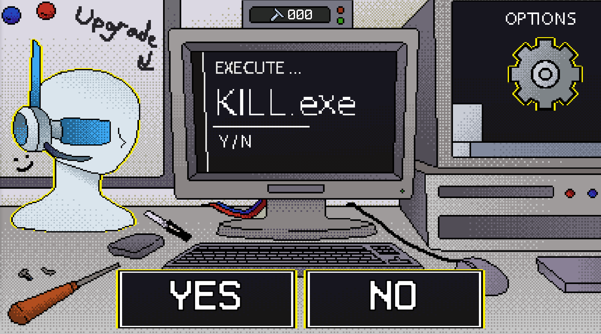
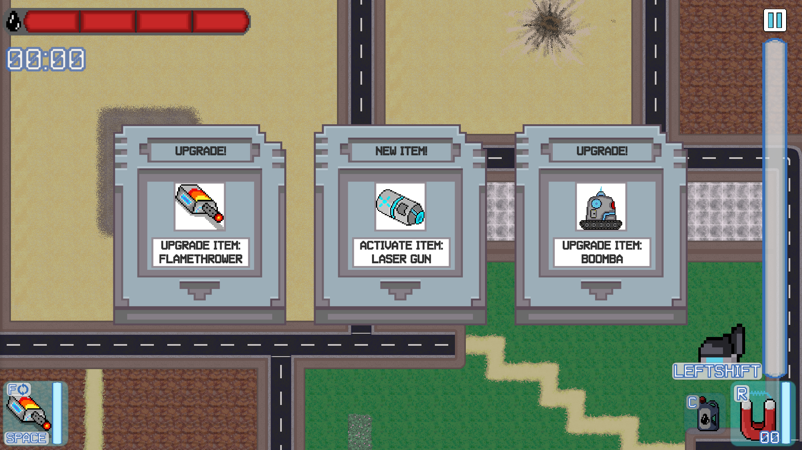
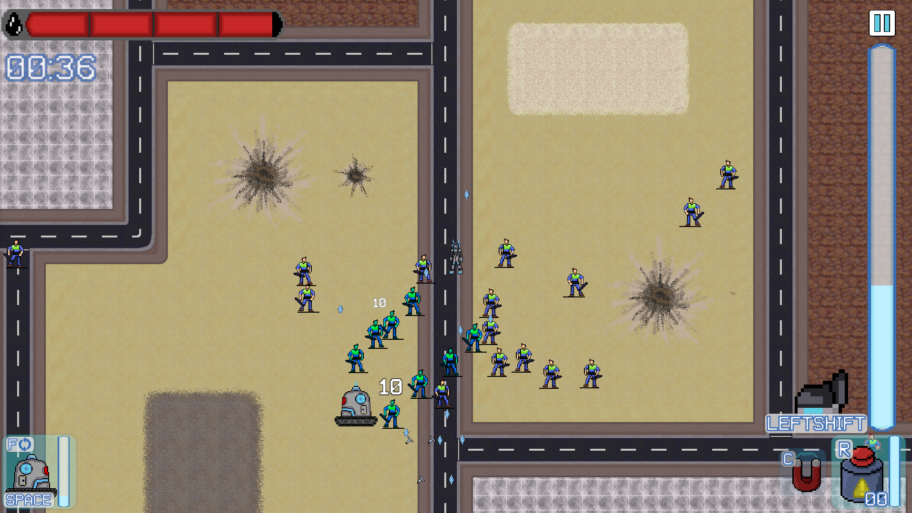

Overview
Kill.exe was developed during the 2024–2025 academic year with the goal of simulating a full production pipeline — from concept through to a polished, shipped build. As both a core programmer and the team's official producer, I helped drive the game from prototype to release while keeping the team on schedule.
Key features
- Fast-paced roguelike combat inspired by horde-survival mechanics.
- 13 unique active and passive items with modular implementation.
- Wave-based progression with scalable difficulty and enemy variety.
- Stylized pixel art and visual effects enhancing chaotic gameplay.
My role
I served as both a core programmer and the official producer for the team. My responsibilities included:
- Creating the modular item system, enabling scalable addition of gameplay items.
- Designing and programming all 13 passive and active items in the game.
- Establishing programming guidelines and project structure in early development.
- Implementing inventory and equipment logic to support item usage and synergies.
- Managing the team using Agile methodology and a simplified JIRA-like workflow.
- Maintaining version control with GitHub and ensuring workflow consistency.
- Collaborating with the UX designer to improve gameplay feel and feedback.
My role was officially designated and recognized within the team, and I consistently ensured we met key deadlines and production milestones.
Screenshots



Play Kill.exe
Available now on Itch.io — developed by Logstorm Games.